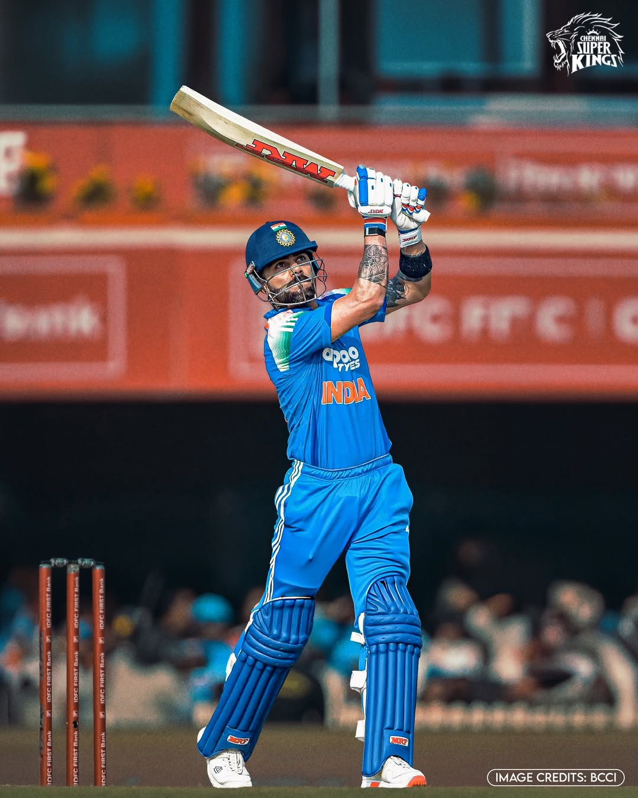
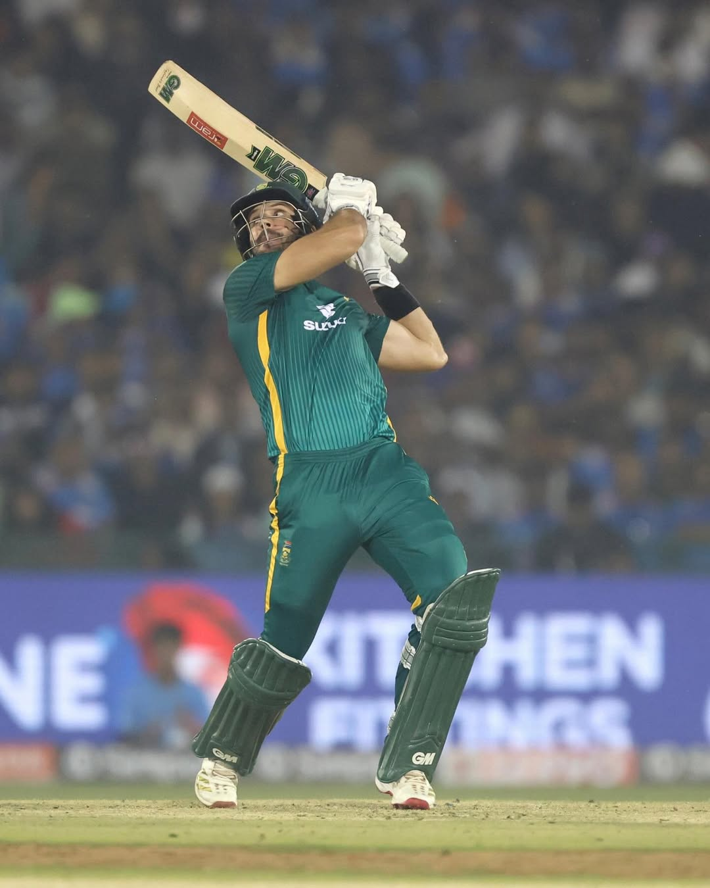
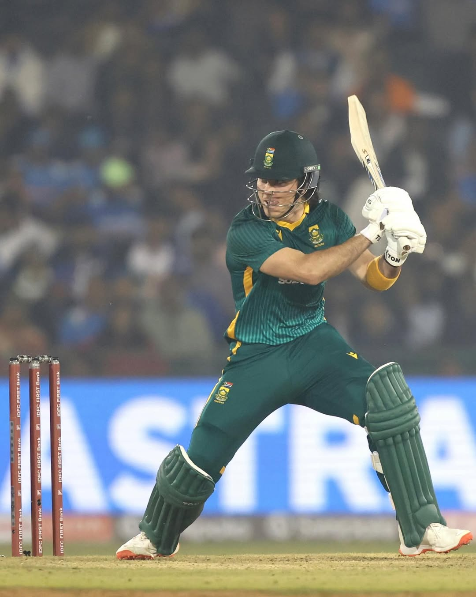
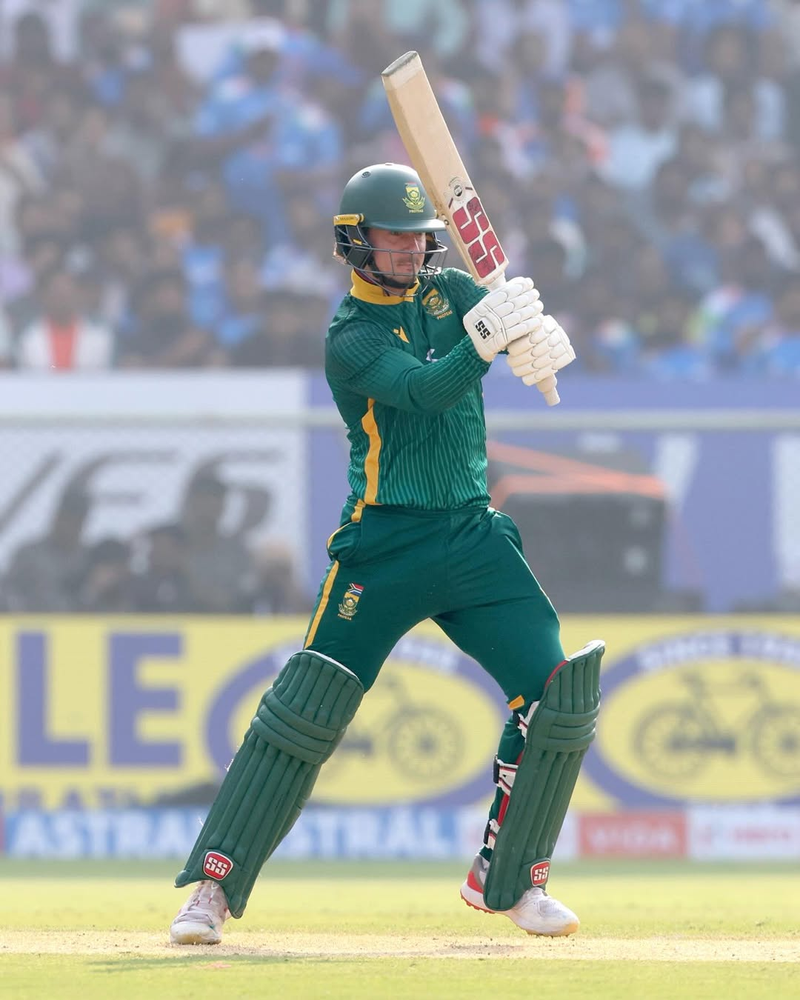
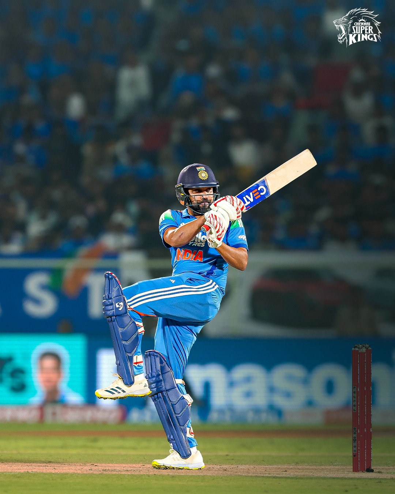

India vs South Africa
1st ODI:
Date:Sun,Nov 30
Venue:JSCA International Stadium Complex, Ranchi
Time:1.30pm
Toss: South Africa won
Highlights:
India defeated South Africa by 17 runs in the 1st ODI at Ranchi to take a 1–0 lead in the series. Virat Kohli starred with a brilliant 135 off 120 balls, registering his 52nd ODI century and surpassing Sachin Tendulkar for the most hundreds in a single format.

He also shared a 136-run partnership with Rohit Sharma (57), who broke Shahid Afridi’s ODI sixes record. KL Rahul added 60 to push India to 349/8.
South Africa fought hard with Matthew Breetzke (72) and Marco Jansen (70), but fell short at 332. Kuldeep Yadav took 4/68 to seal India’s win.
Scorecard
Result:-
India won by 17 runs
2nd ODI
Date:Wed,Dec 06
Venue:Shaheed Veer Narayan Singh International Stadium, Raipur
Time:1.30pm
Toss: South Africa won the toss
Highlights:
The 2nd ODI between India and South Africa at Shaheed Veer Narayan Singh International Stadium, Raipur ended with a win for South Africa, who successfully chased down a target of 359, winning the match by 4 wickets.


Aiden Markram anchored the innings with a brilliant 110 off 98, while Matthew Breetzke provided key support with 68 runs. Together, they guided South Africa to 362/6 in 49.2 overs
Scorecard
Result:-
South Africa won by 4 wickets
3rd ODI
Date:Sat,Dec 6
Venue:ACA-VDCA Cricket Stadium, Visakhapatnam
Time:1.30pm
Toss:India won the toss
Highlights:
The 3rd ODI between India and South Africa at Dr. Y.S. Rajasekhara Reddy ACA-VDCA Cricket Stadium, Visakhapatnam ended with a win for India, who successfully chased down a target of 271, winning the match by 9 wickets.


Yashasvi Jaiswal anchored the innings with a brilliant 116 off 121, while Rohit Sharma provided key support with 75 runs. Together, they guided India to 271/1 in 39.5 overs.
Scorecard
Result:-
India won by 9 wickets